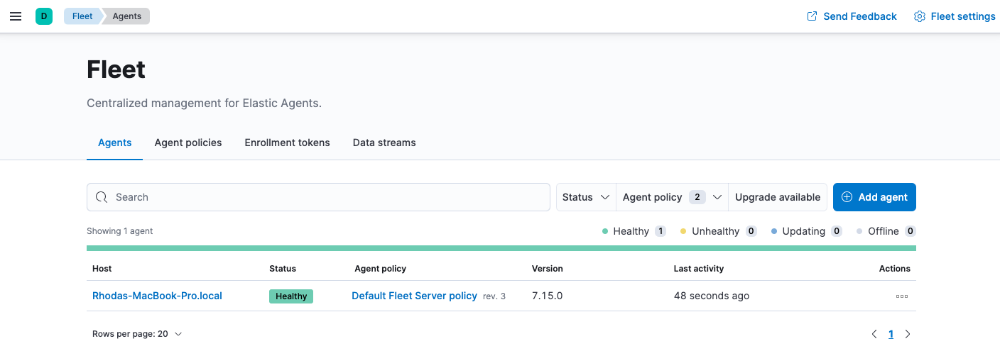
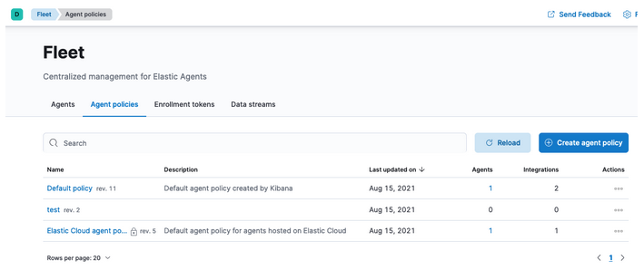

Fleet Serveredit
Fleet Server is a component of the Elastic Stack used to centrally manage Elastic Agents. It’s launched as part of an Elastic Agent on a host intended to act as a server. One Fleet Server process can support many Elastic Agent connections, and serves as a control plane for updating agent policies, collecting status information, and coordinating actions across Elastic Agents.
Fleet Server is the mechanism Elastic Agents use to communicate with Elasticsearch:
- When a new agent policy is created, it’s saved to Elasticsearch.
- To enroll in the policy, Elastic Agents send a request to Fleet Server, using the enrollment key generated for authentication.
- Fleet Server receives the request and gets the agent policy from Elasticsearch, then ships the policy to all Elastic Agents enrolled in that policy.
- Elastic Agent uses configuration information in the policy to collect and send data to Elasticsearch.
- Fleet Server periodically checks Elastic Agents for status information.
- When a policy is updated, Fleet Server retrieves the updated policy from Elasticsearch and sends it to the connected Elastic Agents.

Fleet Server runs as a subprocess inside an Elastic Agent. The agent uses a special policy that describes the Fleet Server configuration. In large scale self-managed deployments or on hosted Elasticsearch Service on Elastic Cloud, Fleet Server is typically run as a dedicated Elastic Agent communication host, but you can optionally use it for data collection on self-managed clusters. For more details, refer to Fleet Server scalability.
Fleet Server deployment modelsedit
Administrators deploying the Elastic Agent have a few deployment choices available to satisfy their organization’s requirements. Fleet Server can be deployed:
- On Elastic Cloud, as part of our hosted Elasticsearch Service, which is managed by Elastic, or
- On-prem and self-managed
Deployed in Elastic Cloudedit
To simplify the deployment of Elastic Agent, the Fleet Server can be provisioned and hosted in the Elastic Cloud. In this case, when the deployment is created, a highly available set of Fleet Servers are automatically deployed.
Administrators can choose the resources allocated to the Fleet Server and whether they want the Fleet Server to be deployed in multiple availability zones.
Once deployed on Elastic Cloud as a service, the full life cycle of the Fleet Server is managed by Elastic. Fleet Server is scalable and highly available with traffic ingress load balanced across multiple instances to satisfy the scale requirements.

Deployed on-prem and self-managededit
Fleet Server can be deployed on-premises and managed by the user. In this deployment model, the administrator is responsible for Fleet Server deployment and lifecycle management. This mode of operation is predominantly chosen to satisfy data governance requirements or used in scenarios where the agents only have access to a private segmented network.
It’s recommended that the administrator provision multiple instances of the Fleet Server and use a load balancer to better scale the deployment.

Fleet Server High availability operationsedit
Fleet Server is stateless. Connections to the Fleet Server therefore can be load balanced as long as the Fleet Server has capacity to accept more connections. Load balancing is done on a round-robin basis.
In the Elastic Cloud deployment model, multiple Fleet Servers are automatically provisioned to satisfy the instance size chosen (instance sizes are modified to satisfy the scale requirement). In addition, if you choose multiple availability zones to address your fault-tolerance requirements, those instances are also utilized to balance the load.
In an on-prem deployment, high-availability, fault-tolerance, and lifecycle management of the Fleet Server are the responsibility of the administrator.
Compatibility and prerequisitesedit
Fleet Server is compatible with the following Elastic products:
-
Elastic Stack 7.13 or later (hosted Elasticsearch Service on Elastic Cloud, or a self-managed cluster).
- For version compatibility: Elasticsearch >= Fleet Server >= Elastic Agent (except for bugfix releases)
- Kibana should be on the same minor version as Elasticsearch.
- Elastic Cloud Enterprise 2.9—requires you to self-manage the Fleet Server.
-
Elastic Cloud Enterprise 2.10 or later—allows you to use a hosted Fleet Server on Elastic Cloud.
-
Requires additional wildcard domains and certificates (which normally only
cover
*.cname, not*.*.cname). This enables us to provide the URL for Fleet Server ofhttps://.fleet.. - The deployment template must contain an APM & Fleet node.
For more information about hosting Fleet Server on Elastic Cloud Enterprise, refer to Manage your APM & Fleet Server.
-
Requires additional wildcard domains and certificates (which normally only
cover
Add a Fleet Serveredit
Before using Fleet for central management, Fleet Server must be running. The steps for running Fleet Server on our hosted Elasticsearch Service on Elastic Cloud are different from the steps for running it as self-managed.
Elastic Cloud runs a hosted version of Fleet Server. No extra setup is required unless you want to scale your deployment.
To confirm that Fleet Server is available in your deployment:
- Log in to Kibana and go to Management > Fleet.
- Click the Agents tab.
- Under Agent policy, look for Elastic Cloud agent policy — Fleet Server is the agent enrolled in the Elastic Cloud agent policy. This policy is managed by Elastic Cloud. You cannot modify it. Confirm that the agent status is Healthy.
Don’t see the Fleet Server agent? Make sure your deployment includes an APM & Fleet node. This node is required to use Fleet Server.

When using our hosted Elasticsearch Service, it’s recommended that you use our hosted version of Fleet Server. However, you can choose to deploy and self-manage Fleet Servers.
To deploy a self-managed Fleet Server, install an Elastic Agent and enroll it in an agent policy containing the Fleet Server integration.
- Log in to Kibana and go to Management > Fleet. The first time you visit this page, it might take a minute to load.
-
Click Fleet settings, and in the Fleet Server hosts field, specify the
URLs Elastic Agents will use to connect to Fleet Server. For example,
https://192.0.2.1:8220, where192.0.2.1is the host IP where you will install Fleet Server. -
In the Elasticsearch hosts field, specify the Elasticsearch URLs where Elastic Agents will send data. For example,
https://192.0.2.0:9200.For more information about these settings, see Fleet UI settings.
- Save and apply the settings.
-
Click the Agents tab and follow the in-product instructions to add a Fleet server:

Notes:
- Make sure you download an x64 architecture installation package.
-
For the agent policy, choose one with a Fleet Server integration. If one doesn’t exist, create it.
- If you choose Production deployment mode, read Encrypt traffic in clusters with a self-managed Fleet Server to learn how to generate certs.
-
It’s recommended you generate a unique service token for each
Fleet Server. For other ways to generate service tokens, see
elasticsearch-service-tokens. -
The
installcommand installs the Elastic Agent as a managed service and enrolls it in a Fleet Server policy. For example, the following command installs a Fleet Server and uses self-signed certs:sudo ./elastic-agent install -f \ --fleet-server-es=http://localhost:9200 \ --fleet-server-service-token=AAEbAWVsYXN0aWMvZmxlaXQtc2VydmVzL3Rva2VuLTE2MeIzNTY1NTQ3Mji6dERXeE9XbW5RRTZqNlJMWEdIRzAtZw \ --fleet-server-policy=27467ed1-1bfd-11ec-9b88-a7c3d83e2897
The following command installs a Fleet Server and uses certificates you provide. Make sure you replace the values in angle brackets.
sudo ./elastic-agent install --url=https://192.0.2.1:8220 \ -f \ --fleet-server-es=https://192.0.2.0:9200 \ --fleet-server-service-token=AAEAaWVsYXN0aWcvZmxlZXQtc2VydmVyL3rva2VuLTE2MzIzNTYcNTQ3MjI6dER1eE9XbW5RRTZqNlJMWEdIRzAtZw \ --fleet-server-policy=27467ed1-1bfd-11ec-9b88-a7c3d83e2897 \ --certificate-authorities=<PATH_TO_CA> \ --fleet-server-es-ca=<PATH_TO_ES_CERT> \ --fleet-server-cert=<PATH_TO_FLEET_SERVER_CERT> \ --fleet-server-cert-key=<PATH_TO_FLEET_SERVER_CERT_KEY>
For more Fleet Server commands, see Command reference.
If installation is successful, you’ll see the Fleet Server Elastic Agent on the Agents tab in Fleet. Notice that the Default Fleet Server Policy is assigned to the Elastic Agent. This policy is created when you run Fleet for the first time.

Now you’re ready to add Elastic Agents to your host systems. To learn how, see Step 2: Add an Elastic Agent to Fleet.
Fleet Server scalabilityedit
This section summarizes the resource and Fleet Server configuration requirements needed to scale your deployment of Elastic Agents. To scale Fleet Server, you need to modify settings in your deployment and the Fleet Server agent policy.
First modify your Fleet deployment settings in Elastic Cloud:
- Log in to Elastic Cloud and go to your deployment.
- Under Deployments > deployment name, click Edit.
-
Under APM & Fleet:
- Modify the compute resources available to the server to accommodate a higher scale of Elastic Agents
- Modify the availability zones to satisfy fault tolerance requirements
For recommended settings, refer to Scaling recommendations (Elastic Cloud).
Next modify the Fleet Server configuration by editing the agent policy:
- In Fleet, click Agent Policies. Click on the Elastic Cloud agent policy to edit it.
-
Open the Actions menu and select Edit integration.

-
Under Fleet Server, modify Max Connections and other advanced settings as described in Scaling recommendations (Elastic Cloud).

Advanced Fleet Server optionsedit
The following advanced settings are available to fine tune your Fleet Server deployment.
-
cache -
-
num_counters - Size of the hash table. Best practice is to have this set to 10x max connections.
-
max_cost - Total size of the cache.
-
-
server.limits -
-
policy_throttle - How often a new policy is rolled out to the agents.
-
checkin_limit.interval - How fast the agents can check in to the Fleet Server.
-
checkin_limit.burst -
Burst of check-ins allowed before falling back to the rate defined by
interval. -
checkin_limit.max - Maximum number of agents.
-
artifact_limit.max - Maximum number of agents that can call the artifact API concurrently. It allows the user to avoid overloading the Fleet Server from artifact API calls.
-
artifact_limit.interval - How often artifacts are rolled out. Default of 100ms allows 10 artifacts to be rolled out per second.
-
artifact_limit.burst - Number of transactions allowed for a burst, controlling oversubscription on outbound buffer.
-
ack_limit.max - Maximum number of agents that can call the Ack API concurrently. It allows the user to avoid overloading the Fleet Server from Ack API calls.
-
ack_limit.interval - How often an acknowledgment (ACK) is sent. Default value of 10ms enables 100 ACKs per second to be sent.
-
ack_limit.burst -
Burst of ACKs to accommodate (default of 20) before falling back to the rate
defined in
interval. -
enroll_limit.max - Maximum number of agents that can call the Enroll API concurrently. This setting allows the user to avoid overloading the Fleet Server from Enrollment API calls.
-
enroll_limit.interval - Interval between processing enrollment request. Enrollment is both CPU and RAM intensive, so the number of enrollment requests needs to be limited for overall system health. Default value of 100ms allows 10 enrollments per second.
-
enroll_limit.burst -
Burst of enrollments to accept before falling back to the rate defined by
interval.
-
Scaling recommendations (Elastic Cloud)edit
The following tables provide resource requirements and scaling guidelines based on the number of agents required by your deployment:
Resource requirements by number of agentsedit
| Number of Agents | Memory | vCPU | Elasticsearch Cluster size |
|---|---|---|---|
50 |
512MB |
Up to 2.5 vCPU |
480GB disk | 16GB RAM | up to 5 vCPU |
5,000 |
1GB |
Up to 2.5 vCPU |
960GB disk | 32GB RAM | 5 vCPU |
7,500 |
2GB |
Up to 2.5 vCPU |
1.88TB disk | 64GB RAM | 9.8 vCPU |
10,000 |
4GB |
Up to 2.5 vCPU |
3.75TB disk | 128GB RAM | 19.8 vCPU |
12,500 |
8G |
Up to 2.5 vCPU |
7.5TB disk | 256GB RAM | 39.4 vCPU |
30,000 |
16GB |
2.5 vCPU |
7.5TB disk | 256GB RAM | 39.4 vCPU |
50,000 |
32GB |
2.5 vCPU |
11.25TB disk | 384GB RAM |59.2 vCPU |
Recommended settings by number of deployed Elastic Agentsedit
You might need to scroll to the right to see all the table columns.
50 |
5,000 |
7,500 |
10,000 |
12,500 |
30,000 |
50,000 |
|
Max Connections |
100 |
7,000 |
10,000 |
20,000 |
32,000 |
32,000 |
32,000 |
Cache settings |
|||||||
|
2000 |
20000 |
40000 |
80000 |
160000 |
160000 |
320000 |
|
2097152 |
20971520 |
50971520 |
104857600 |
209715200 |
209715200 |
209715200 |
Server limits |
|||||||
|
200ms |
50ms |
10ms |
5ms |
5ms |
2ms |
5ms |
|
|||||||
|
50ms |
5ms |
2ms |
1ms |
500us |
500us |
500us |
|
25 |
500 |
1000 |
2000 |
4000 |
4000 |
4000 |
|
100 |
5001 |
7501 |
10001 |
12501 |
15001 |
25001 |
|
|||||||
|
100ms |
5ms |
2ms |
1ms |
500us |
500us |
500us |
|
10 |
500 |
1000 |
2000 |
4000 |
4000 |
4000 |
|
10 |
1000 |
2000 |
4000 |
8000 |
8000 |
8000 |
|
|||||||
|
10ms |
4ms |
2ms |
1ms |
500us |
500us |
500us |
|
20 |
500 |
1000 |
2000 |
4000 |
4000 |
4000 |
|
20 |
1000 |
2000 |
4000 |
8000 |
8000 |
8000 |
|
|||||||
|
100ms |
20ms |
10ms |
10ms |
10ms |
10ms |
10ms |
|
5 |
50 |
100 |
100 |
100 |
100 |
100 |
|
10 |
100 |
200 |
200 |
200 |
200 |
200 |
Server runtime settings |
|||||||
|
20 |
20 |
20 |
20 |
20 |
20 |
20 |
Fleet Server monitoringedit
Monitoring Fleet Server is key since the operation of the Fleet Server is paramount to the health of the deployed agents and the services they offer. When Fleet Server is not operating correctly, it may lead to delayed check-ins, status information, and updates for the agents it manages. The monitoring data will tell you when to add capacity for Fleet Server, and provide error logs and information to troubleshoot other issues.
To enable monitoring for Fleet Server, turn on agent monitoring in the agent policy. For self-managed clusters, monitoring is on by default when you create a new agent policy or use the existing Default Fleet Server agent policy. However, it is off by default in the Elastic Cloud agent policy because monitoring requires additional RAM.
To turn on Fleet Server monitoring in the agent policy:
-
In Fleet, go to Agent Policies and click on the Elastic Cloud agent policy.
 - Click the Settings tab and notice that Agent monitoring is off by default.
-
Under Agent monitoring, select Collect agent logs and Collect agent metrics.

The agent will now be able to collect logs and metrics from the Fleet Server.
The Fleet Server is deployed as yet another agent in the system.
-
Next, set the Default namespace.
Setting the default namespace lets you segregate Fleet Server monitoring data from other collected data. This makes it easier to search and visualize the monitoring data. By default the monitoring data is sent to the default namespace.
- To confirm your change, click Save changes.
To see the metrics collected for Fleet Server, go to Analytics > Discover.
In the following example, fleetserver was configured as the namespace, and
you can see the metrics collected:


In Kibana, go to Analytics > Dashboard and search for the predefined dashboard
called [Elastic Agent] Agent metrics. Choose this dashboard, and run a query
based on the fleetserver namespace.
The following dashboard shows data for the query data_stream.namespace:
"fleetserver". In this example, you can observe CPU and memory usage as a
metric and then resize the Fleet Server, if necessary.

Note that as an alternative to running the query, you can hide all metrics
except fleet_server in the dashboard.